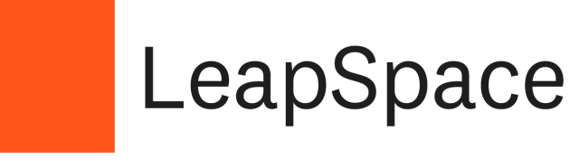
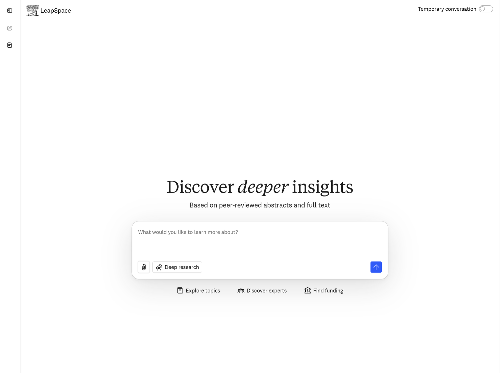
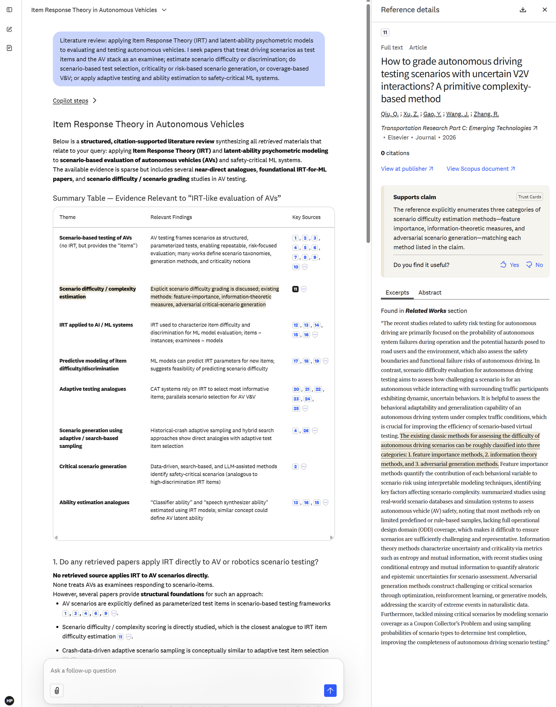
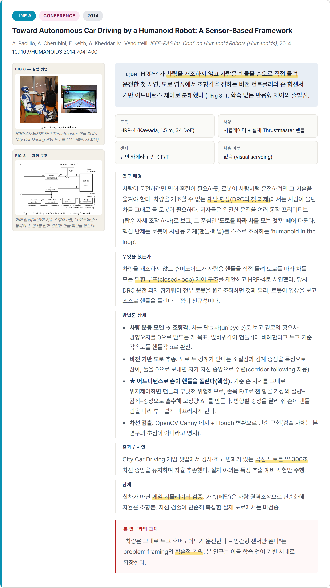
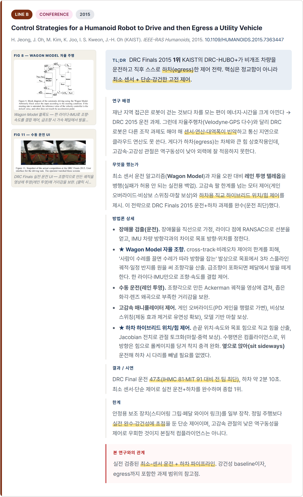
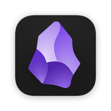

1LLM Wiki란?What is an LLM Wiki?
논문은 한 번 읽고 끝나면 금방 흩어진다. 몇 달이 지나면 어떤 논문을 읽었는지, 그 논문이 내 연구와 어떻게 연결되는지도 흐려진다. LLM Wiki는 읽은 논문을 아래 세 가지 형태로 정리하고, 주제별로 서로 연결해 확장 가능한 개인 논문 지식베이스를 만드는 방식이다. 그래서 나중에 질문하면 외부 웹 검색보다 내가 직접 구축한 위키를 먼저 근거로 답할 수 있다.
A paper you read once fades quickly. A few months later, it becomes unclear which papers you read and how they connect to your work. An LLM Wiki keeps each paper in the three forms below and links them by topic, building an expandable personal paper knowledge base. So when you ask later, it can answer first from the wiki you built yourself, not the web.
이 시스템은 연구 아이디어를 대신 만들어 주거나, 버튼 한 번으로 문헌조사를 끝내는 도구가 아니다. 핵심은 읽은 논문을 잊지 않도록 구조화해 개인 지식베이스로 남기는 것이다.This system does not invent research ideas for you or finish a literature review at the push of a button. The point is to structure and accumulate what you read so you don't forget it.
한 편의 논문이 저장되는 세 가지 형태The three forms each paper is stored in
원본 PDFOriginal PDF
정확한 확인과 인용이 필요할 때 다시 보는 원문이다.The source you return to when you need to verify or cite precisely.
요약Summary
핵심 내용을 빠르게 다시 확인하기 위한 1차 정리본이다.A first-pass digest for quickly recalling the key points.
연결된 노트Linked note
개념, 방법, 연구 흐름을 다른 논문과 연결하는 지식 노트다.A knowledge note linking concepts, methods, and threads across papers.
park2026-overtaking)으로 묶여 하나의 논문 단위로 관리된다. 분류는 처음부터 고정하지 않고 논문 내용을 기준으로 부여한다. 논문이 많아지면 카테고리를 더 세분화하거나 재배치한다.The three files share one name (park2026-overtaking) and are managed as a single paper unit. Categories are not fixed up front. They are assigned by paper content. As the collection grows, you subdivide or rearrange them.2문헌 수집: 주제에서 논문까지Collecting papers: from topic to PDF
연구 질문과 방향은 사용자가 정한다. 이 에이전트에는 주제 기반 문헌조사를 맡긴다. 예를 들어 “X에 대해 리뷰해줘”라고 요청하면 ① 관련 논문을 찾고, ② 확보 가능한 PDF를 다운로드하고, ③ 위키에 정리할 수 있는 형태로 구성한다. 여기서 ‘찾기’와 ‘다운로드’는 서로 다른 단계다.You set the research question and direction. You hand this agent the topic-based literature search. For example, ask “review X for me.” It then ① finds relevant papers, ② downloads the PDFs it can access, and ③ organizes them into a wiki-ready form. Here, “finding” and “downloading” are separate steps.
① 찾기 (discovery): 관련 논문 확인① Find (discovery): what papers exist

search.py로 검색한다. CS, 물리, 로보틱스처럼 프리프린트가 활발한 분야에서 특히 유용하다.Searched via search.py. Especially useful in preprint-heavy fields like CS, physics, and robotics.

search.py로 함께 검색한다. 다양한 출판사의 메타데이터와 인용 관계를 무료로 확인할 수 있다. 대부분의 ‘논문 찾기’는 이 단계에서 충분하다.Also searched via search.py. Metadata and citation links across many publishers, for free. Most “finding” is covered at this step.
Scholar
search.py로 함께 검색한다. 논문마다 TL;DR 자동요약을 주고, OpenAlex와 커버리지·관련도 랭킹이 달라 보완적이다. 무료 키를 넣으면 안정적(없으면 가끔 rate limit으로 건너뜀).Also searched via search.py. Gives a TL;DR per paper; different coverage and ranking than OpenAlex. A free key makes it reliable (without one it may hit rate limits).
search.py로 함께 검색한다(키 있을 때 자동 포함). Elsevier의 큐레이션·인용 중심 학술 DB다. 받기용으로 이미 넣은 Elsevier 키로 그대로 동작한다(같은 키, KAIST 기관망).Also searched via search.py (auto-included when a key exists). Elsevier's curated, citation-rich database. Runs on the same Elsevier key you already added for fetching (institutional network).
※ LeapSpace(ScienceDirect 등 본문 의미검색)도 언제든 함께 쓸 수 있다. 아래 심화·선택에서 설명한다.※ LeapSpace (full-text semantic search over ScienceDirect, etc.) can be used anytime too. Explained in Advanced below.
② 다운로드 (fetch): 찾은 논문 PDF 확보② Download (fetch): get the PDFs you found
arXiv · OA키 불필요No keyfetch_paper.py를 사용한다. arXiv와 무료 공개본(OA)은 별도 키 없이 받을 수 있다. DOI가 입력되면 먼저 OA 버전을 시도한다.Uses fetch_paper.py. arXiv and open-access (OA) copies download with no key. Given a DOI, it tries the OA version first.
fetch_paper.py를 사용한다. OA가 없으면 출판사 API를 통해 PDF를 받는다. LeapSpace에서 찾은 Elsevier DOI도 이 단계에서 다운로드한다.Uses fetch_paper.py. When no OA exists, it fetches through the publisher API. Elsevier DOIs found via LeapSpace are downloaded here too.
출판사 API가 없는 곳(대표적으로 IEEE)을 fetch_ieee.py가 브라우저(Playwright)로 열어 PDF를 가로채 받는다. 핵심은 IEEE 전용이 아니라, 페이지가 PDF를 바로 띄우면 받힌다(IEEE는 전용 우회 처리도 있음). 캠퍼스망·KAIST VPN이면 보통 로그인 없이 된다.fetch_ieee.py opens the page in a browser (Playwright) and captures the PDF for sources without an API (IEEE being the main one). It isn't IEEE-only: any page that serves the PDF inline works (IEEE also has a custom fallback). On campus / KAIST VPN it usually needs no login.
자동으로 받지 못한 논문은 PDF 파일을 papers/ 폴더에 직접 복사하면 된다. 이후 위키에 넣는 과정은 동일하게 진행된다.For papers it can't fetch automatically, just copy the PDF into the papers/ folder. Ingesting it into the wiki then proceeds the same way.
3지식화 흐름: PDF가 위키 노트가 되는 과정Knowledge flow: how a PDF becomes a wiki note
다운로드한 PDF에 대해 “이 PDF ingest해줘”라고 요청하면 아래 흐름이 진행된다. 각 단계는 정해진 순서대로 실행되며, 같은 이름(stem)을 사용해 원본·요약·위키 노트를 서로 연결한다.Ask “ingest this PDF” for a downloaded PDF and the flow below runs. Each step runs in a fixed order, using the same name (stem) to link the original, the summary, and the wiki note.
PDF → sources → wiki를 지킨다. 목표는 단발성 리뷰 문서를 만드는 것이 아니라, 논문 지식이 계속 누적되는 개인 위키를 만드는 것이다.Creation order is kept: PDF → sources → wiki. The goal isn't a one-off review document but a personal wiki where paper knowledge keeps accumulating.4운영 규칙과 한계Operating rules & limits
4대 규칙: 위키의 신뢰도를 지키는 기준Four rules: keeping the wiki trustworthy
기본은 웹검색 금지Web search off by default
웹 검색은 명시적으로 요청할 때만 사용한다. 근거 없는 일반 지식으로 빈칸을 채우지 않는다.Use web search only when explicitly asked. Don't fill gaps with unsourced general knowledge.
위키 우선Wiki first
질문에 답할 때는 먼저 sources/와 wiki/에 정리된 내용을 근거로 삼는다.When answering, ground it first in what's organized under sources/ and wiki/.
불확실하면 원문 확인Unsure? Recheck the source
위키 노트만으로 답이 불명확하면 papers/에 있는 원문 PDF를 다시 확인한다.If the notes alone are unclear, re-read the original PDF in papers/.
자료가 없으면 요청No material? Ask for it
근거 자료가 없으면 추측하지 않고 필요한 PDF를 추가해 달라고 요청한다.If the supporting material is missing, don't guess. Ask for the PDF to be added.
유의사항Things to note
- 자동 만능 도구가 아니다. 한 번의 명령으로 모든 문헌조사가 끝나지는 않는다. 매일 조금씩 자료를 추가하며 완성도를 높이는 누적형 도구다.Not an all-in-one autopilot. One command won't finish a whole literature review. It's a cumulative tool you build up a little each day.
- 출판사 PDF 접근은 환경에 따라 달라진다. Elsevier·Wiley·IEEE 등은 기관 라이선스와 KAIST망 접속 여부에 영향을 받는다. 자동으로 받지 못한 논문은 PDF를 직접 넣으면 된다.Publisher PDF access depends on your environment. Elsevier, Wiley, IEEE, and others depend on institutional licenses and KAIST network access. For papers it can't fetch, add the PDF yourself.
- 요약은 틀릴 수 있다. LLM이 만든 요약과 노트는 이해를 돕는 출발점이지 최종 근거가 아니다. 최종 확인은 언제나 papers/의 원문 PDF를 기준으로 한다.Summaries can be wrong. LLM-made summaries and notes are a starting point, not the final authority. Final verification always goes to the original PDF in papers/.
- 분류 체계는 누적되면서 바뀐다. 처음부터 완벽한 카테고리를 정하기 어렵다. 논문이 많아지면서 세분화하거나 재배치하는 것이 자연스러운 운영 방식이다.The category scheme shifts as it grows. A perfect taxonomy up front is hard. Subdividing and rearranging as papers accumulate is the normal way to operate.
5실습: 설치부터 활용까지Practice: from setup to finish
실습에서는 연구 주제만 바꾸고 나머지 절차는 그대로 따라 하면 된다. 프롬프트에서 〈내 연구 주제〉 부분만 본인 주제로 바꿔 사용한다.Everyone uses the same prompts, changing only the research topic. Just replace 〈your topic〉 and copy.
준비 · 설치Setup새 프로젝트 폴더 준비 (4단계)Prepare a new project folder (4 steps)
- VS Code 설치 (code.visualstudio.com).
- 위키를 둘 폴더를 원하는 이름·위치로 직접 만들어 VS Code에서 연다.
- VS Code 안의 터미널을 연다. 다음 단계는 모두 이 터미널에서 진행한다.
- Install VS Code (code.visualstudio.com).
- Create the folder for your wiki with the name and location you want, open it in VS Code.
- Open the terminal inside VS Code. All next steps run there.
- 먼저 Node.js를 설치한다(
npm사용). - 아래에서 Claude Code 또는 Codex 하나를 설치하고, 그 폴더에서
claude/codex로 실행한다. - 둘 다 같은 규칙(
AGENTS.md)을 읽어 동일하게 동작한다.
- Install Node.js first (for
npm). - Install Claude Code or Codex below, then run
claude/codexin that folder. - Both read the same rules (
AGENTS.md) and behave identically.
npm 설치가 막히면(PowerShell 정책·버전 등) 공식 설치 안내를 따른다: Claude Code 설치 · Codex 설치.⚠ If npm install is blocked (PowerShell policy/version), use the official guides: Claude Code · Codex.tupa-llm-wiki로 강제되지 않는다.This clones the repo into the folder you opened and installs the dependencies (incl. Playwright for IEEE). The folder name/location stays what you chose in step 1, not forced to tupa-llm-wiki.secrets/api-keys.json에 입력한다(api-keys.example.json 복사).- 받기(유료 본문): Elsevier · Wiley · Springer 키.
- 찾기(선택): Semantic Scholar 키(rate limit 완화). Scopus는 위 Elsevier 키로 함께 동작(같은 키, KAIST 기관망).
contact_email: OpenAlex 예의용.
secrets/api-keys.json (copy api-keys.example.json).- Fetch (paywalled text): Elsevier · Wiley · Springer.
- Search (optional): a Semantic Scholar key (eases rate limits). Scopus uses the same Elsevier key (institutional network).
contact_email: courtesy for OpenAlex.
⚠ Windows에서 Claude Code 설치가 막히면? (단계별 안내 펼치기)Stuck installing Claude Code on Windows? (open step-by-step)
1단계 · 설치 명령 실행Step 1 · Run the installer
PowerShell을 열고 이 한 줄을 붙여넣는다. Node.js·npm은 필요 없고, C:\Users\사용자명\.local\bin에 알아서 설치된다.Open PowerShell and paste this line. No Node.js/npm needed; it installs to C:\Users\<you>\.local\bin.
2단계 · 설치 확인Step 2 · VerifyTrue면 성공(3단계로), False면 1단계가 실패한 것(다시 실행하고 에러 확인).True = success (go to step 3); False = step 1 failed (re-run and check the error).
3단계 · PATH 등록 (영구)Step 3 · Add to PATH (permanent)
4단계 · PowerShell 창을 완전히 닫고 새로 열기Step 4 · Fully close PowerShell and reopen
여기가 제일 많이 놓치는 부분. PATH 변경은 새로 연 창부터 적용된다. 쓰던 창에서 계속 치면 영원히 안 된다.The most-missed step. PATH changes apply only to newly opened windows; typing in the old window never works.
5단계 · 새 창에서 확인Step 5 · Check in the new window
버전 숫자가 뜨면 끝.A version number means you're done.
6단계 · 실행Step 6 · Run
작업할 폴더로 이동해서 claude 실행. 브라우저가 열리며 로그인한다(Pro/Max 구독 또는 API 키, 한 번만).Go to your folder and run claude. A browser opens for login (Pro/Max subscription or API key, once).
auto mode로 실행 (권한 확인 매번 안 묻기)Run in auto mode (skip permission prompts)
에이전트가 매번 허락을 묻지 않고 자동으로 진행하게 하려면 이 옵션으로 실행한다. --가 맨 앞, 단어 사이는 하이픈이다(dangerously--skip-permissions처럼 치면 안 됨).To let the agent proceed without asking each time, run with this flag. -- goes first, words joined by single hyphens (not dangerously--skip-permissions).
"claude 용어가 인식되지 않습니다"가 계속 나올 때"claude is not recognized" keeps showing
대부분 4단계(새 창)를 안 해서다. 새 창에서도 안 되면, 그 창에서 임시로 PATH를 먹이고 바로 테스트한다(되면 적용 타이밍 문제였던 것, 다음 새 창부턴 그냥 된다).Usually step 4 (new window) was skipped. If a fresh window still fails, set PATH temporarily in that window and test (if it works, it was a timing issue; new windows are fine from now on).
실습 진행Run the practice논문 찾기에서 종합까지 (1~6단계)From finding papers to synthesis (steps 1–6)
내 연구 주제는 "〈내 연구 주제〉"야. 이 주제로 literature review를 시작하자. 여러 학술 DB(arXiv·OpenAlex·Semantic Scholar·Scopus)에서 관련 논문을 찾아, 제목·저자·연도·DOI(또는 arXiv id)·무료본 여부를 표로 보여줘.My research topic is "〈your topic〉". Let's start a literature review on it. Search several scholarly databases (arXiv, OpenAlex, Semantic Scholar, Scopus) for relevant papers and show a table with title, authors, year, DOI (or arXiv id), and open-access availability.
💡 막연한 분야보다 구체적인 lit review 카테고리일수록 결과가 좋다. 예: "자율주행"(△) → "도심 자율주행에서 보행자 의도 예측"(○).💡 A specific lit-review category beats a broad field. e.g. "autonomous driving" (△) → "pedestrian intent prediction in urban self-driving" (○).
| 논문Paper | 한 줄 요약 (초록 기반)One-line summary (from abstract) | |
|---|---|---|
| OpenVLA Kim 2024 · arXiv:2406.09246 | 7B 오픈 VLA, 범용 조작 정책 베이스라인.7B open VLA; a general manipulation baseline. | 무료본OA |
| TinyVLA Wen 2025 · IEEE RA-L | 느린 추론·데이터 비효율을 작은 백본으로 개선.Tackles slow inference & data inefficiency with a small backbone. | 키/브라우저key/browser |
위 후보로 shortlist.html(클릭형 체크리스트)을 만들어 브라우저로 열어줘. 각 논문에 한 줄 요약과 함께 초록을 한국어로 2~3문장 요약해서 달고, 관련성이 낮은 논문은 '제외 추천'으로 표시해줘.Build a clickable shortlist.html from those candidates and open it in the browser. For each, add a one-line summary plus a 2–3 sentence Korean summary of the abstract, and mark the less relevant ones as "exclude".
브라우저에서 다운로드할 논문만 체크한 뒤 “선택 복사”를 누르고, 복사한 내용을 채팅에 붙여넣으면 선택한 논문만 다운로드한다.→ In the browser, check what you want → “선택 복사” → paste it back in chat to fetch just those.
전문 PDF를 다운로드해줘. arXiv와 무료 공개본(OA)을 먼저 시도하고, 안 되면 출판사 API, 그래도 안 되면 브라우저 자동화(Playwright)로 시도해줘. 다운로드하지 못한 논문은 목록으로 알려줘. 받을 논문 = 2단계에서 '선택 복사'한 DOI·arXiv id: 〈여기에 붙여넣기〉Download the full-text PDFs. Try arXiv and open access (OA) first, then publisher APIs, and if still blocked, browser automation (Playwright). List anything you couldn't get. Papers to fetch = the DOIs/arXiv ids you "선택 복사"-ed in step 2: 〈paste here〉
→ 다운로드한 PDF는 papers/ 폴더에 저장된다. 직접 보유한 논문 PDF도 papers/에 넣어두면 같은 방식으로 ingest할 수 있다.→ Downloaded PDFs are saved in papers/. Your own PDFs can also go in papers/ and be ingested the same way.
▶ 2406.09246
✅ saved: papers/kim2024-openvla.pdf
▶ 10.1109/lra.2025.3544909
✅ saved: papers/wen2025-tinyvla.pdf
완료: 성공 2 / 막힘 0Done: 2 ok / 0 blocked다운로드한 PDF들을 ingest해줘. 각 논문에 대해 sources/ 요약, wiki/ 구조화 노트, overviews/ 종합 문서까지 만들어줘.Ingest the downloaded PDFs. For each paper, create the sources/ summary → wiki/ structured note → overviews/ overview.
sources/에는 논문마다 요약 마크다운(.md) 1개가 저장되고, wiki/에는 주제별 구조화 노트가 정리된다. 원본 PDF, 요약, 위키 노트는 같은 파일명을 사용한다.sources/ gets one summary markdown (.md) per paper; wiki/ gets the topic-organized notes. The original PDF, summary, and wiki note share the same filename.
지금까지 구축한 위키만 근거로 답해줘(웹검색 금지): "〈궁금한 점〉?" 어느 노트·논문에서 나온 근거인지도 같이.Answer using only the wiki built so far (no web search): "〈your question〉?" Cite which note/paper each point comes from.
이 주제의 논문들을 종합해줘. 공통된 접근, 서로 다른 점, 아직 충분히 다뤄지지 않은 연구 공백(gap)을 정리하고 근거 논문을 함께 제시해줘. 근거는 내 위키에서만 찾아줘.Synthesize the papers on this topic. Lay out common approaches, differences, and open gaps, citing the supporting papers. Ground it only in my wiki.
6심화 · 선택Advanced · optional
실습은 따라하기 쉽게 1~6단계를 정해진 순서로 진행하지만, 실제 연구에선 더 자유롭게 섞어 쓴다. 아래는 그렇게 필요할 때 골라 쓰는 선택 기능 세 가지다(LeapSpace · 리뷰카드 · Obsidian).The practice runs steps 1–6 in a fixed order so it's easy to follow, but real research is more flexible. Below are three optional features you mix in as needed (LeapSpace · review cards · Obsidian).

LeapSpace로 더 찾기Find more with LeapSpaceOpenAlex로 부족한 것 같아. 이 주제로 LeapSpace에 넣을 500자 이내 영어 질문을 만들어줘.OpenAlex doesn't seem enough. Draft an English query (under 500 characters) for this topic to run on LeapSpace.


왼쪽 첫 화면: 초록·full-text 기반 질의응답(ChatGPT처럼 물어본다). 오른쪽 답변 예시: 문장마다 citation이 붙고, citation을 클릭하면 어떤 논문의 어느 섹션·문장에서 왔는지까지 하이라이트. (각 이미지를 클릭하면 팝업 확대)Left: home, ask it like ChatGPT, grounded in abstracts & full text. Right: an answer, each sentence cited; click a citation to see which paper and which section/sentence it came from. (Click either image to enlarge.)
LeapSpace에서 이런 답을 받았어: 〈답변 붙여넣기〉. 여기 인용된 논문들을 내 후보 목록에 더해줘.I got this from LeapSpace: 〈paste the answer〉. Add the papers it cites to my candidate list.
HTML 기반 리뷰카드 만들기Build review cards (HTML)
- 여러 주제·논문을 누적하는 지식베이스A knowledge base that accumulates many topics
- 짧은 요약 + 구조화 노트 + 종합Short summaries + structured notes + overviews
- 활용: 질문하면 내 자료로 답한다Use: ask, and it answers from your material
- 한 주제를 깊게 정리한 산출물(주제당 1편)A deliverable that goes deep on one topic (one per topic)
- 논문마다 깊은 카드 + 핵심 figure까지A deep card per paper + key figures
- 활용: 읽고 비교하는 리뷰 문서Use: a review document to read and compare
extract_figures.py, pymupdf 필요).One review per topic; never mix topics. Key figures are auto-extracted from the PDFs (extract_figures.py, needs pymupdf).이 2편으로 리뷰카드를 만들어줘: 〈논문 1: 제목 또는 DOI〉, 〈논문 2: 제목 또는 DOI〉.Make review cards from these 2 papers: 〈paper 1: title or DOI〉, 〈paper 2: title or DOI〉.
→ 출력 위치(review/〈주제〉/)·템플릿·깊은 카드·핵심 figure·그림 클릭 확대는 규칙(AGENTS §8)대로 자동이니 프롬프트엔 논문만 적으면 된다. 시연이라 2편만 지정한다(많으면 오래 걸림). 비교 매트릭스·공백 분석은 옵션("매트릭스도 넣어줘").→ Output location (review/〈topic〉/), template, deep cards, key figures, click-to-zoom are automatic per the rules (AGENTS §8); just name the papers. For the demo, pick 2 (more takes a while). A comparison matrix & gap analysis are optional.


실제 리뷰는 이런 카드가 논문마다 쌓인다(여기선 2장). 섬네일을 클릭하면 팝업으로 크게 열려 스크롤하며 볼 수 있고, 그 안에서 그림도 클릭하면 확대된다.A real review stacks one such card per paper (two shown here). Click a thumbnail to open it large in a popup and scroll; inside, figures enlarge on click too.

Obsidian으로 위키 보기View your wiki in Obsidianwiki/는 이미 Markdown + [[백링크]]라, 변환 없이 Obsidian으로 그 폴더를 열기만 하면 된다. 개인·학술 사용은 무료다(동기화·웹공개 부가서비스만 유료인데, 우리는 Git으로 동기화하니 필요 없다).Our wiki/ is already Markdown with [[backlinks]], so with no conversion you just open that folder in Obsidian. It's free for personal/academic use (only Sync/Publish are paid, and we use Git instead).[[링크]] 클릭 이동, 빠른 검색. 에이전트는 노트를 만들고, Obsidian은 사람이 읽고 탐색하는 화면이다. 평범한 .md라 락인(lock-in)은 없다.What you get: a graph view (a knowledge map of papers, topics, concepts), a backlinks panel, click-through [[links]], and fast search. The agent writes the notes; Obsidian is the human's reading and navigation layer. It's plain .md, so there's no lock-in.→ 여는 법: obsidian.md에서 설치 → Open folder as vault → 내 위키 폴더를 고른다.→ How: install from obsidian.md → Open folder as vault → pick your wiki folder.